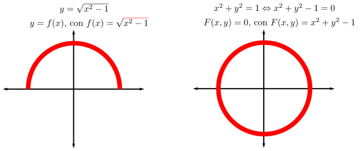
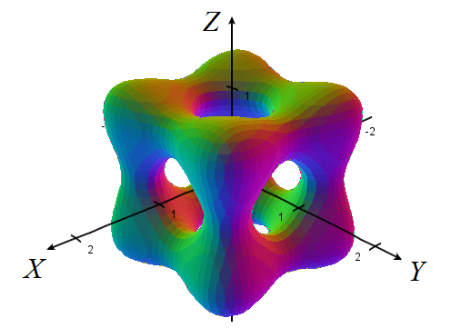
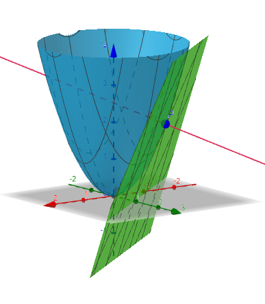
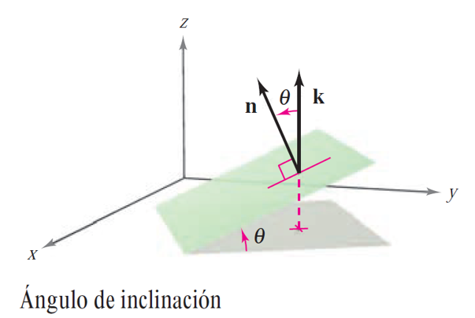

3.4. Plano tangente y recta normal#
3.4.1. ¿\(z=f(x,y)\) o \(F(x,y,z)=0\)?#
Hasta ahora, hemos representado a las funciones de dos variables mediante ecuaciones de la forma \(x=f(x,y)\). A partir de éstas, representamos la gráfica de la función. Esto se llama representación explícita.
Sin embargo, este tipo de representación resulta excesivamente restrictivo en algunos casos. Nos va a convenir representar superficies mediante la forma más genérica \(F(x,y,z)=0\), es decir, a una representación implícita.
De todos modos, esto no es nada nuevo. Ya lo hacíamos para funciones de una variable. Fíjate:
{kind=link}
Hacemos algo parecido para funciones de dos variables. Siguiendo con un ejemplo análogo al anterior:
Ecuación implícita de la esfera centrada en \((0,0,0)\) y de radio \(1\): \(F(x,y,z) = 0\), con \(F(x,y,z) = x^2 + y^2 + z^2 -1\).
Ecuación explícita de la parte superior de la misma esfera: \(z = f(x,y)\), con \(f(x,y) = \sqrt{1-x^2-y^2}\).
Entonces, en general,
Observation
La gráfica de la función \(z=f(x,y)\) será la superficie de nivel \(S\), definida como \(F(x,y,z)=0\), para \(F(x,y,z) = f(x,y)-z\).
De todos modos, la representación implícita es mucho más rica y nos permitirá jugar con muchos tipos de superficies tridimensionales. Fíjate, por ejemplo, en el curso de Cálculo Multivariable de la ETS de Ingeniería de la Universidad de Sevilla, de donde tomamos la preciosa superficie \(F(x,y,z) = 0\), con \(\displaystyle F(x,y,z) = 5\left(x^4+y^4+z^4\right) − 5\left(x^2+y^2+z^2\right) + 2\):
{kind=link}
3.4.2. Plano tangente y recta normal a una superficie#
Definimos a continuación el plano tangente y la recta normal a una superficie.
Definition (Plano tangente y recta normal)
Consideramos \(F\), una función escalar de tres variables, y \(S\) la superficie definida por la ecuación \(F(x,y,z) = 0\). Supongamos que \(F\) es diferenciable en el punto \(P=(x_0,y_0,z_0)\), contenido dentro de \(S\), y que \(\nabla F(x_0,y_0,z_0)\neq \mathbf{0}\). Entonces:
Al plano que pasa por \(P\) y es normal a \(\nabla F(x_0,y_0,z_0)\) se le llama plano tangente a \(S\) en \(P\).
A la recta que pasa por \(P\) y tiene la dirección de \(\nabla F(x_0,y_0,z_0)\) se le llama recta normal a \(S\) en \(P\).
Un ejemplo de plano tangente y vector normal puede verse en la siguiente figura (obtenida con esta aplicación de Geogebra de Alfredo Sánchez Alberca):
{kind=link}
NOTA: Puede demostrarse, utilizando la regla de la cadena que veremos en la siguiente sección, que el plano tangente es perpendicular al vector tangente de cualquier curva contenida en \(S\).
La ecuación del plano tangente a \(S\) en \(P=(x_0,y_0,z_0)\) se deduce inmediatamente teniendo en cuenta que \(P\) pertenece al plano y que \(\nabla F(x_0,y_0,z_0)\) es normal a dicho plano (ortogonal a cada vector en el plano). En efecto, dado \((x,y,z)\) un punto arbitrario en el plano, se tiene que el vector que une dicho punto y \(P\)
se encuentra en el plano tangente, y por tanto es ortogonal a \(\nabla F(x_0,y_0,z_0)\), es decir, se tiene
que conduce al siguiente teorema.
Theorem (Ecuación del plano tangente)
Sea \(F\) una función escalar de tres variables diferenciable en un punto \(P=(x_0,y_0,z_0)\) de la superficie dada por \(F(x,y,z)=0\) tal que \(\nabla F(x_0,y_0,z_0)\neq \mathbf{0}\). Entonces,
La ecuación del plano tangente a dicha superficie en \((x_0,y_0,z_0)\) es
Las ecuaciones paramétricas de la recta normal a la superficie en \((x_0,y_0,z_0)\) son
Nótese que, para la gráfica de una función de dos variables, \(z=f(x,y)\), según lo que hemos aprendido en la sección anterior,
Entonces, por el teorema anterior se tiene que, si \(f\) es diferenciable, el plano tangente a la gráfica de \(f\) en el punto \((x_0,y_0,z_0)=(x_0,y_0,f(x_0,y_0))\) es
Remark (Diferenciabilidad y plano tangente)
En este punto, conviene señalar que el concepto de diferenciabilidad está relacionado con la existencia del plano tangente. Si recordamos la definición de diferenciabilidad, vemos que \(f\) es diferenciable en \((x_{0},y_{0})\), si y sólo si
Lo que está entre paréntesis no es otra cosa que el plano tangente a \(f\) en \((x_{0},y_{0})\). Por lo tanto, estamos diciendo que una función es diferenciable en un punto si y sólo si la diferencia relativa entre \(f\) y su plano tangente en ese punto tiende a \(0\).
Dicho de modo más técnico, la diferenciabilidad establece que el plano tangente es una aproximación lineal de la gráfica de la función, de la misma manera que el concepto de derivabilidad establece que la recta tangente es una aproximación lineal de la gráfica de una función de variable real.
3.4.3. Ángulo de inclinación#
Definition (Ángulo de inclinación de un plano)
El ángulo de inclinación de un plano se define como el ángulo \(\theta\) (\(0\leq \theta \leq \pi/2\)) entre el plano dado y el plano \(XY\), como se muestra en la figura.
Puesto que el vector \(\mathbf{k}\) (es decir, el vector \((0,0,1)\)) es normal al plano \(XY\), se puede utilizar la fórmula del coseno del ángulo entre dos vectores para concluir que el ángulo de inclinación de un plano con vector normal \(\mathbf{n}\) es
siendo \(0\leq \theta \leq \pi/2\).
{kind=link}
Ahora podemos definir otra aplicación del vector gradiente (¡este pequeñín sí que vale!): determinar el ángulo de inclinación del plano tangente a una superficie, como se indica en la siguiente observación.
Remark
Sea \(F\) una función escalar de tres variables diferenciable en un punto \(P=(x_0,y_0,z_0)\) de la superficie dada por \(F(x,y,z)=0\) tal que \(\nabla F(x_0,y_0,z_0)\neq \mathbf{0}\). Entonces, el ángulo de inclinación del plano tangente a dicha superficie en \(P=(x_0,y_0,z_0)\) es
siendo \(0\leq \theta \leq \pi/2\).
3.4.4. Links para ampliar conocimientos#
Si no tienes suficiente (o no has entendido nada), puedes consultar los siguientes enlaces, a ver si así…
3.4.5. Cálculo y representación del plano tangente y de la recta normal con Python#
Consideramos a continuación el problema de encontrar el plano tangente y la recta normal a la superficie \(z=f(x,y)=x^2+y^2+3\) en el punto \((x_0,y_0,z_0)=(1,1/2,f(1,1/2))\), que resolvemos, en Python, aplicando los resultados expuestos. En primer lugar, importamos los módulos necesarios teniendo en cuenta que usaremos Matplotlib para la representación gráfica.
import sympy as sp
import numpy as np
import matplotlib
import matplotlib.pyplot as plt
%matplotlib inline
x, y, z, t = sp.symbols('x y z t', real=True) # definimos las variables simbólicas
f = sp.Lambda((x,y), x**2+y**2+3)
x0 = 1; y0=sp.Rational(1/2); z0=f(x0,y0)
# Cálculo de la ecuación del plano tangente
F = sp.Matrix([f(x,y)-z])
grad_F = F.jacobian([x,y,z]).transpose()
n = grad_F.subs(x,x0).subs(y,y0).subs(z,z0)
plano_tang = sp.solve(sp.Eq(n[0]*(x-x0)+n[1]*(y-y0)+n[2]*(z-z0),0),z)[0]
display(plano_tang)
# Cálculo de la ecuación vectorial de la recta normal
recta_norm = sp.Lambda(t,(x0+t*n[0], y0+t*n[1], z0+t*n[2]))
display(recta_norm)
Una vez calculado el plano tangente y la recta normal, se traslada la información del módulo Sympy a Numpy, para un uso posterior en Matplotlib:
f_n = sp.lambdify((x,y),f(x,y),"numpy") # función numpy con la expresión de f(x,y)
Plano_tang = sp.lambdify((x,y),plano_tang,"numpy")
Recta_norm = sp.lambdify(t,recta_norm(t),"numpy")
Ahora se pueden usar las funciones de Numpy para la representación gráfica del plano tangente y la recta normal:
from mpl_toolkits.mplot3d import axes3d
# Nube de puntos para representar la superficie y el plano
N = 50
x = np.linspace(-2, 2, N)
y = np.linspace(-2, 2, N)
X, Y = np.meshgrid(x, y)
fval = f_n(X,Y)
Pval = Plano_tang(X,Y)
# Conjunto de puntos para representar la recta normal
tvec = np.linspace(-2, 2, 100)
Rval = Recta_norm(tvec)
# Creación de la figura 3D
fig = plt.figure()
ax = plt.axes(projection="3d")
# Representación de la superficie z=f(x,y), el plano tangente y la recta normal
surf_F = ax.plot_surface(X, Y, fval)
surf_Plano = ax.plot_surface(X, Y, Pval)
recta = ax.plot3D(*Rval)
# Etiquetas de los ejes
ax.set_xlabel('x')
ax.set_ylabel('y')
ax.set_zlabel('z')
# Punto de vista del observador: elevación, ángulo azimutal
ax.view_init(elev=10, azim=-100)
ax.auto_scale_xyz([-2,2],[-2,2],[-5,10])
plt.show()
Por último, calculamos el ángulo de inclinación del plano tangente calculado:
angulo=sp.acos(sp.Abs(n[2])/sp.sqrt(n.dot(n)))
display('Ángulo de inclinación del plano tangente:',angulo)
'Ángulo de inclinación del plano tangente:'